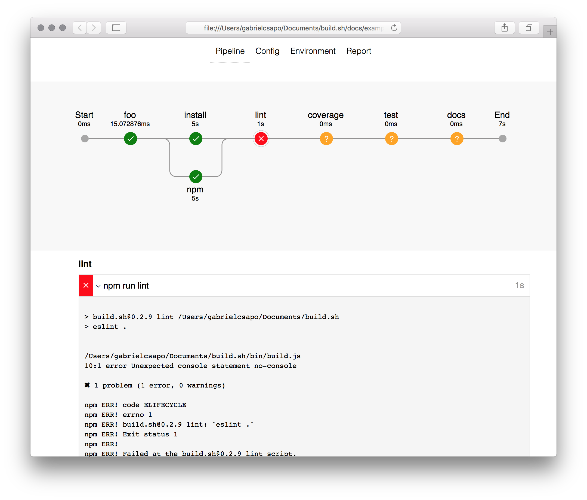

build.sh
🔨 run and visualize the build process
Installation
npm install build.sh -gUsage
commit a
build.ymlfile to your project root
pipeline:
{key}:
- {command}
- {command}To invoke about the pipeline simply run build at the project root.
The terminal output will show the pipeline being run and eventually will open the browser to the location of the final report.
This build pipeline:
output: ./docs
pipeline:
install:
- npm --version
- node --version
- npm install
lint:
- npm run lint
build:
- npm run coverage
test:
- npm test
docs:
- npm run generate-docsWill yield the following results:

Sometimes things go as planned and certain build phases will fail and that will yield:
